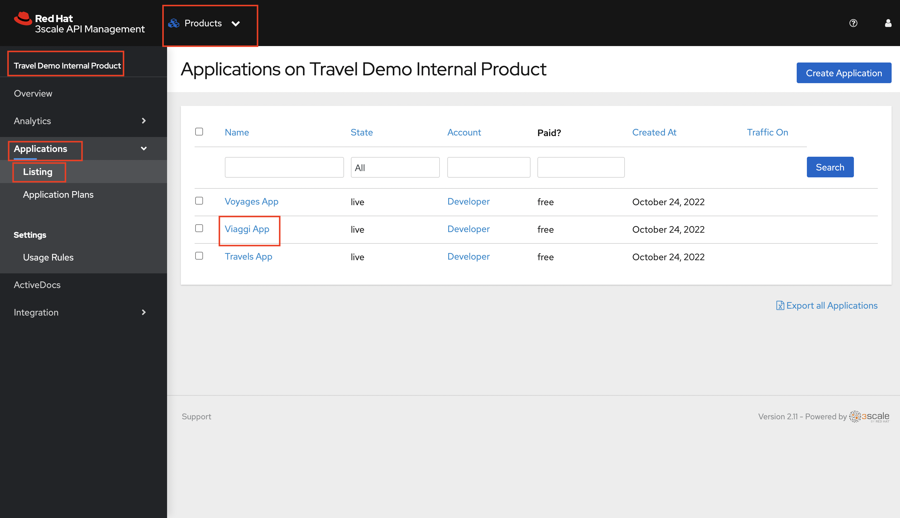

Solution Pattern: Name Template
See the Solution in Action
1. Recorded Video
Include here content related to potential existing demos: blogs, articles, recorded videos, walkthrough guides, tutorials.
2. Watch a demonstration
Next, you can learn how to walkthrough this demo.
3. Walkthrough Guide
These are the steps to provision the demo
3.1. Prerequisites
You will need the following prerequisites:
-
Access to an OpenShift environment, preferably with cluster-admin privileges.
-
OpenShift CLI
-
Ansible Installed on your local machine
-
Follow this guide to install Ansible if you haven’t already done so
-
-
Set up SSH connections so Ansible can connect to the managed nodes.
-
Add your public SSH key to the authorized_keys file on the remote system.
-
You can follow this link to set up the keys and SSH connections on a Mac
-
-
Test the SSH connection. After setting up the keys you should be able to SSH to the remote machine where OpenShift is installed without needing a password.
-
Test the SSH connections, for example:
3.2. Setting up the demo environment
-
Download this repo into your local machine (on any machine where you’ve installed ansible) https://github.com/redhat-servicemesh-apim-demo/3scale-OSSM-TravelDemo-Playbooks
-
On your terminal, navigate to folder
3scale-OSSM-TravelDemo-Playbooks/ansiblecd 3scale-OSSM-TravelDemo-Playbooks/ansible -
Set the following environment variables. Copy paste the below on your terminal
TARGET_HOST="Replace with the ssh username of your remote machine" OCP_USERNAME="Replace with OpenShift Admin username" WORKLOAD="ocp4-workload-3scale-servicemesh-demo"Example:
TARGET_HOST="lab-user@bastion.zvbw7.sandbox5.opentlc.com" OCP_USERNAME="kubeadmin" WORKLOAD="ocp4-workload-3scale-servicemesh-demo" -
Run the below playbook using the below command and wait until the playbook finishes running
ansible-playbook -i ${TARGET_HOST}, ./configs/ocp-workloads/ocp-workload.yml \ -e"ansible_ssh_private_key_file=~/.ssh/id_rsa" \ -e"ocp_username=${OCP_USERNAME}" \ -e"ocp_workload=${WORKLOAD}" \ -e"ACTION=create"
3.3. Walkthrough guide
-
The Ansible playbook has provisioned the following components and configurations for you:
-
Travelz application
-
OpenShift Service Mesh configured to connect, manage, and observe Travelz microservices
-
3Scale API Management
-
Partner Booking Apps
-
3.4. Guide Setup
|
Complete following instructions to ensure that this guide is configured correctly for your OpenShift cluster. |
-
Type the below command on you oc cli to get the OpenShift ingress domain value and copy it:
oc get ingresses.config/cluster -o jsonpath={.spec.domain} -
Enter in the text box provided in the instructions page and hit enter

3.5. Scenario 1 - Managing and Visualizing the microservices
Our Ansible script has already deployed the travelz application and configured Service Mesh to managed them. In the below steps we shall learn how ServiceMesh services, increase observability and tracing across these services.
-
Login to the Open Shift Console as admin user and navigate to the "istio-system" project in the developer view
-
Use your OpenShift credentials to login to Kiali
-
On the Kiali UI, navigate to graph menu.
-
The graph provides a powerful set of features to visualize the traffic topology of the service mesh. Select all namespaces in the graph and enable Request Distribution and Traffic Animation in the Display Options:
-
Visualize the traffic flowing through the services and the percentage of requests passing through each service.
This is all possible because of these services are a part of the service mesh
-
Trace each microservice call and interaction using the distributed tracing capability of OpenShift Service Mesh. Login into the Jaeger UI with OpenShift credentials.
-
Select all the checkboxes and click on Allow selected permissions
-
Choose any service and click find traces to see a list of calls to the service.
-
Click on any trace to find the details of each trace such as the spans, time taken to complete the request, services called etc.
This is how ServiceMesh provides granular details about the interaction amongst services that are a part of it.
3.6. Scenario 2 - Opening API access to external partners
A lot of partner companies approached Travelz and requested them to open up the access to their travel APIs so that they can build more value added services. Travelz saw this is a great business opportunity but at the same time wanted to do this in a sustainable and secure way
Travelz wanted to build a new version (v2) for partners. They wanted all the partners calls to flow to v2 and the internal calls through v1. They decided to leverage the intelligent traffic routing capabilities of Service Mesh for this.
-
Click on the admin user name shown on the Openshift console and click on the Copy Login Command option.
-
Copy the login command and paste it on the terminal where OpenShift CLI is installed
-
Deploy v2 version of the travel microservice using the below command and wait for a couple of minutes
oc apply -n travel-agency -f https://raw.githubusercontent.com/redhat-servicemesh-apim-demo/demos/main/travels/travels-v2.yaml -
Navigate to your Kiali graph view and you’ll notice that the traffic from the internal portals(travels, viaggi and voyages) is being evenly split between v1 and v2. This happens because Service mesh by default splits the internal traffic between the different versions of the same service. v1 and v2 are the different versions of the travel service.
-
However our goal is to utilize v2 only for external and v1 for internal. This can be achieved by ServiceMesh’s traffic routing capabilities.
-
Create a virtual service that routes all the internal traffic to v1
A VirtualService defines a set of traffic routing rules to apply when a host is addressed. Each routing rule defines matching criteria for traffic of a specific protocol. If the traffic is matched, then it is sent to a named destination service (or subset/version of it) defined in the registry. -
In a couple of minutes your Kiali graph should depict all the traffic flowing through v1.
-
Enable API access to external and route all external traffic to v2.
On examining the external virtual service yaml available here, we can see in the last two lines how we route 100% of external calls coming for the istio ingress gateway(entry point for external traffic) to v2. You can always change the percentage between the versions based on your use case. For example think about deploying a new version in Canary style where you gradually move the traffic from one older version to the newer version -
Check if the API is accessible externally by copy pasting the below link from your browser.
Kiev is the city for which we are getting the details of using this API. If you do not see the API response in the browser try replacing https with http -
Make around 20 calls to API by either refreshing your browser repeatedly or running the below curl command from your terminal.
-
Navigate back to your graph on Kiali UI and you’ll notice that the external traffic coming from the istio-ingress-gateway starts to flow through v2 in a few seconds
If you do not see the traffic through v2 on the graph, you can refresh the graph on the Kiali UI
3.7. Scenario 3 - Securing API access - North South or External traffic
Now that we’ve opened up the API access externally and separated the traffic flow between internal and external consumers let’s see how we can secure the external access using 3scale API Management.
In this scenario let’s assume we have a partner application that wants to access the travel APIs and display the details on their own website. Let’s call this partner The Red Company. 3scale API management provides a secure way for organizations to share to secure their APIs externally with partners. The Apps send API request to the gateway URL provided by the Red Hat 3scale API Management. This in turn will validate the API user and redirect the call to the backend. Authentication identifies the requester, and only allows access to the APIs for authenticated end-users. In our example the Red Company will be using an API Key generated by 3scale as a method of authentication to access the APIs.
+ image::apicast-architecture-image.png[apicast-architecture-image]
-
Navigate to Red Company App using this link.
-
Try to choose a city from the drop down to get the hotels, cars, flights information for that city. You will notice that the city drop down is not showing any values. Let’s investigate on what’s happening.
-
Navigate to the deployment of the app on you OpenShift Console and click on the travels-demo-ui deployment
-
Click on the Environment tab and you’ll notice that the API_USER_KEY_VALUE is missing. This is the env variable for API security and needs to be replaced. You can obtain this key from 3scale.
External Applications access the APIs via the inbuilt 3scale gateway provided out of the box and managed by 3scale. The API_GET_CITIES and the API_GET_DETAILS_FOR_CITY are both environment variables used to the store the gateway URL behind which the actual API backends are protected. For the purpose of this guide they have already been populated but you can always get the gateway URL from your 3scale portal. -
Log into 3scale using the below URL.
-
Login using the username:
adminand obtain the password using the below commandoc get secret -n 3scale system-seed -o json | jq -r .data.ADMIN_PASSWORD | base64 -d -
Once you login to the 3scale admin portal, close the on boarding wizard to land directly on the dashboard.

-
Click on the Travel Demo Partner Product
-
Optional: Navigate to Integration > Settings. Notice that we have selected 3scale Managed APIcast as our gateway/reverse proxy to process the API requests. The Production public URL is the actual URL that partners and external consumers will use to consume the API. This is the value that is provided as an environment variables (API_GET_CITIES and the API_GET_DETAILS_FOR_CITY) in partner apps to access the APIs.
-
Optional : Navigate to Integration > Backends. This is where we provide the base URLs of all the API backends that need to be protected by Red Hat 3scale.
-
Navigate to Applications > Listing > Select the Red App .
Red App is the name of the partner app that is registered on 3scale API management and has been allocated a key to access the API. -
THE API Key (which is redsecret in this case) is listed under the API Credential section, copy it
-
Go back to your OpenShift Console and replace the place holder text with the API Key as shown below and hit the save button. Wait for a minute before you proceed to the next step.
-
Navigate again to Red Company App using this link.
-
Since we’ve provided the API key, we should now be able to select a city from the dropdown and get details of the hotels, flights, cars etc that are relevant to that city.

-
Two other similar partner apps Green App and Blue App have already been deployed
3.7.1. Monitor and analyze the external API calls
*Leverage 3scale to monitor and analyze the external API calls from the different partners apps.
-
We shall now explore how we can leverage 3scale to monitor and analyze the API calls from the different partners apps.
-
Simulate a bunch of API calls from mimicking the 3 different partner apps instead of manually refreshing the browser.
for i in {1..25} do curl -v "https://traveldemo-istio-partner-product-3scale-apicast-production.%CLUSTER_WILDCARD_URL%/travels/Kiev?user_key=greensecret"; curl -v "https://traveldemo-istio-partner-product-3scale-apicast-production.%CLUSTER_WILDCARD_URL%/travels/Kiev?user_key=bluesecret"; curl -v "https://traveldemo-istio-partner-product-3scale-apicast-production.%CLUSTER_WILDCARD_URL%/travels/Kiev?user_key=redsecret"; done -
From the 3scale admin portal, navigate to Travel Demo Partner Product > Analytics > Traffic. This page shows the number of call made to the travel details page by the partner apps here. Controlling the metrics, methods, and time range allows you to check different types of data.
-
In case you see empty charts instead of graphs, try changing the date range to 7 days and choose the Hits(hits) metric as shown below
-
To check these details for each individual app, navigate to Travel Demo Partner Product > Applications > Listing > Red App
-
Click on analytics link above the application name. The usage charts are displayed for the application. Controlling the metrics, methods, and time range allows you to check different types of data about the application.
-
3scale also provides interactive documentation where external partners can learn about the API and try the API. Navigate to Travel Demo Partner Product > ActiveDocs > Travel Partner API Documentation.
-
Check out the interactive API documentation page that is automatically imported along with the API.
3scale provides a developer portal out of the box where API consumers can signup for the API, access documentation, get their API keys, monitor their usage etc. To limit the time and scope of this exercise that part is not being explored as a part of this guide.
This section portrayed how APIs can be shared, secured, monitored when exposed externally using 3scale API Management. All the external applications are calling the 3scale Apicast gateway which acts as a reverse proxy and only redirects authenticated calls to the backend to get a response.
3.8. Scenario 3 - Securing Internal API access - Inter Domain Traffic
More often than not huge enterprises have multiple business units or LOBs with varying goals and KPIs. In such scenarios when the internal LOBs want to share and reuse the APIs built by other LOBs, it is better to establish a formal relation to track the value that the APIs are provided internally. It is also important make sure the external LOBs are accessing our APIs securely and not abusing them.
The travels-portal and travel-agency are two such LOBs that are part of the Travelz company. The travel-agency LOB is the provider of the API and travel-portal LOB is the consumer. We are going to leverage the native Red Hat 3scale and Service Mesh Integration here to establish the formal relationship. In this ServiceMesh serves as the dataplane and 3scale serves as the control plane which eliminates the need to have an additional gateway and reduces latency due to the reduced number of hops.
The ServiceMeshExtension custom resource spec provides the configuration that the integration module reads from. The spec is embedded in the host and read by the module. Follow the below steps to configure the ServiceMeshExtension. This will setup the API management control plane for us.
-
Obtain the 'Admin Access Token' by running this command. Note down the Admin_Access_Token
oc get secret -n 3scale system-seed -o json | jq -r .data.ADMIN_ACCESS_TOKEN | base64 -d -
The service token will enable the permission for service mesh to be able to access a particular 3scale product. From the 3scale admin-portal navigate to Account Settings > Personal > Tokens and copy the Service Token of the Travel Demo Internal Product
-
Create a Custom Resource Definition file for the Service Mesh Extension with name
sme-internal.yamlusing vim or any other editor on your OC CLI terminal. Press i to go into the insert mode -
Copy paste the below yaml into the file and replace the access token, service token values as shown in the image below and save it. To save the file (if using vim), hit esc followed by : followed by wq followed by enter to save
apiVersion: maistra.io/v1 kind: ServiceMeshExtension metadata: name: travel-agency-internal namespace: travel-agency spec: image: 'registry.redhat.io/openshift-service-mesh/3scale-auth-wasm-rhel8:0.0.1' phase: PostAuthZ priority: 100 workloadSelector: labels: app: travels version: v1 config: api: v1 system: name: system token: replace with access token upstream: name: >- outbound|3000||system-provider.3scale.svc.cluster.local timeout: 5000 url: 'http://system-provider.3scale.svc.cluster.local' backend: extensions: - no_body name: backend upstream: name: >- outbound|3000||backend-listener.3scale.svc.cluster.local timeout: 5000 url: 'http://backend-listener.3scale.svc.cluster.local' services: - id: '3' token: replace with service token authorities: - '*' credentials: app_id: - header: keys: - app_id - query_string: keys: - app_id app_key: - header: keys: - app_key - query_string: keys: - app_key user_key: - query_string: keys: - user_key - header: keys: - user_key mapping_rules: - method: GET pattern: / usages: - delta: 1 name: hits -
Apply the CRD to your cluster using the below command
oc apply -f sme-internal.yaml -
Wait for a couple of minutes and navigate back to your Kiali console. You will notice that the traffic stops flowing from the portals to the agency APIs as we just enabled authentication for them and none of the portals are sending in authenticated requests
-
Navigate to 3scale admin portal and click on the Travel Demo Internal Product
If you are logged out of 3scale for some reason, you can login using the username:
adminand obtain the password using this commandoc get secret -n 3scale system-seed -o json | jq -r .data.ADMIN_PASSWORD | base64 -d -
Navigate to Integration > Settings. Notice that we have selected Istio as our gateway/reverse proxy to process the Internal API requests. We are using the istio gateway directly instead of using the additional gateway provided by 3scale for internal requests but are leveraging 3scale for security.
-
Navigate to Applications > Listing > Select the Viaggi App .
Viaggi App is the name one of the internal apps that is registered on 3scale API management and has been allocated a key to access the API. -
THE API Key (which is viaggisecret in this case) is listed under the API Credential section, copy it
-
Navigate to the OpenShift console UI where the application is deployed. Administrator > Workloads > Deployments > Click on viaggi
-
Click on the Environment tab and click on Add more in order to add two new environment variables that have the API secret related information as shown below. Click save and wait for a couple of minutes
API_USER_KEY_NAME:user_keyAPI_USER_KEY_VALUE:viaggisecret -
Navigate to your Kiali graph . You’ll notice that for the travel and voyages workloads on the graph there is no traffic red because they unauthenticated and for viaggi it’s green as we just provided the API Key. Double click on the viaggi workload
-
You should see the traffic is flowing only from viaggi and it’s graph is green.
-
Repeat the same steps of adding the
API_USER_KEY_NAME and API_USER_KEY_VALUEto the other two internal portals i.e. voyages and travels deployments and wait for a couple of minutes.Values for travels portal:
API_USER_KEY_NAME:user_keyAPI_USER_KEY_VALUE:travelsecretValues for voyages portal
API_USER_KEY_NAME:user_keyAPI_USER_KEY_VALUE:voyagessecret -
After a couple of minutes go back to your Kiali UI and click the back arrow that says back to full graph

-
Notice that all the traffic is now green indicating that the traffic is flowing seamlessly across the services. The graph should look exactly like how we started the exercise but the only difference being that all the traffic flowing from internal portals is authenticated and monitored via 3scale.